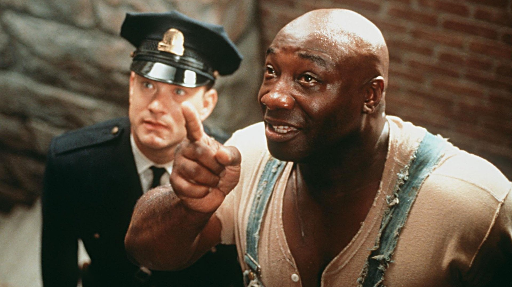
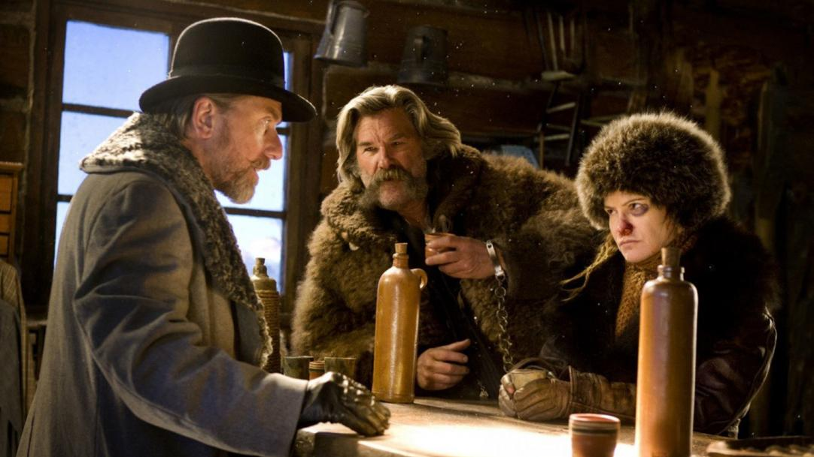
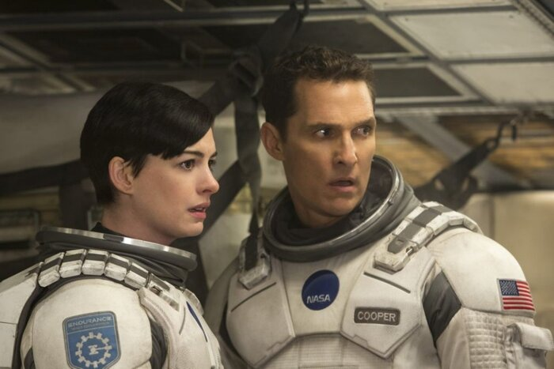
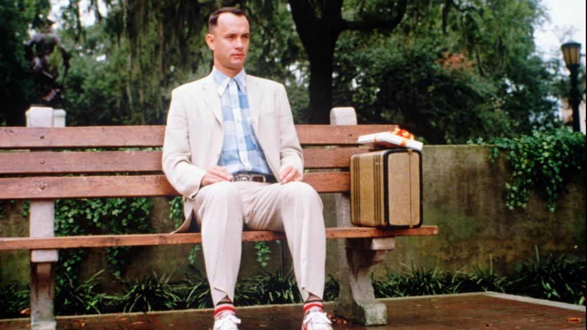
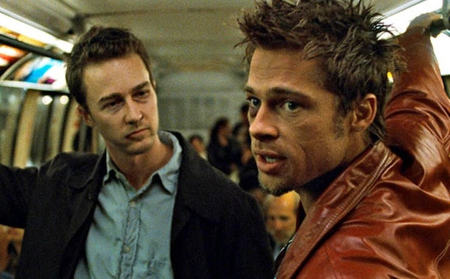

Побег из Шоушенка
Успешный банкир Энди Дюфрейн обвинен в убийстве собственной жены и ее любовника. Оказавшись в тюрьме под названием Шоушенк, он сталкивается с жестокостью и беззаконием, царящими по обе стороны решетки. Каждый, кто попадает в эти стены, становится их рабом до конца жизни. Но Энди, вооруженный живым умом и доброй душой, отказывается мириться с приговором судьбы и начинает разрабатывать невероятно дерзкий план своего освобождения.
Наркоз
Клай Бересфорд вынужден лечь под нож. Однако в процессе операции на сердце он неожиданно приходит в себя. Находясь в парализованном состоянии, будучи не в силах пошевелить ни рукой, ни ногой, он, тем не менее, чувствует каждое касание скальпеля к своей плоти…
Астрал
Джош и Рене переезжают со своими детьми в новый дом, но не успевают толком распаковать вещи, как начинаются странные события. Необъяснимо перемещаются предметы, в детской звучат странные звуки… Но в настоящий ужас приходят родители, когда их десятилетний сын Далтон впадает в кому. Все усилия врачей в больнице помочь мальчику безуспешны.
Гравитация
Доктор Райан Стоун, блестящий специалист в области медицинского инжиниринга, отправляется в свою первую космическую миссию под командованием ветерана астронавтики Мэтта Ковальски, для которого этот полет — последний перед отставкой. Но во время, казалось бы, рутинной работы за бортом случается катастрофа.
Шаттл уничтожен, а Стоун и Ковальски остаются совершенно одни; они находятся в связке друг с другом, и все, что они могут, — это двигаться по орбите в абсолютно черном пространстве без всякой связи с Землей и какой-либо надежды на спасение.

Зеленая миля
Пол Эджкомб — начальник блока смертников в тюрьме «Холодная гора», каждый из узников которого однажды проходит «зеленую милю» по пути к месту казни. Пол повидал много заключённых и надзирателей за время работы. Однако гигант Джон Коффи, обвинённый в страшном преступлении, стал одним из самых необычных обитателей блока.

Омерзительная восьмерка
США после Гражданской войны. Легендарный охотник за головами Джон Рут по кличке Вешатель конвоирует заключенную. По пути к ним прибиваются еще несколько путешественников. Снежная буря вынуждает компанию искать укрытие в лавке на отшибе, где уже расположилось весьма пестрое общество: генерал конфедератов, мексиканец, ковбой… И один из них — не тот, за кого себя выдает.

Интерстеллар
Когда засуха, пыльные бури и вымирание растений приводят человечество к продовольственному кризису, коллектив исследователей и учёных отправляется сквозь червоточину (которая предположительно соединяет области пространства-времени через большое расстояние) в путешествие, чтобы превзойти прежние ограничения для космических путешествий человека и найти планету с подходящими для человечества условиями.
Начало
Кобб — талантливый вор, лучший из лучших в опасном искусстве извлечения: он крадет ценные секреты из глубин подсознания во время сна, когда человеческий разум наиболее уязвим. Редкие способности Кобба сделали его ценным игроком в привычном к предательству мире промышленного шпионажа, но они же превратили его в извечного беглеца и лишили всего, что он когда-либо любил.

Форест Гамп
От лица главного героя Форреста Гампа, слабоумного безобидного человека с благородным и открытым сердцем, рассказывается история его необыкновенной жизни. Фантастическим образом превращается он в известного футболиста, героя войны, преуспевающего бизнесмена. Он становится миллиардером, но остается таким же бесхитростным, глупым и добрым. Форреста ждет постоянный успех во всем, а он любит девочку, с которой дружил в детстве, но взаимность приходит слишком поздно.

Бойцовский Клуб
Сотрудник страховой компании страдает хронической бессонницей и отчаянно пытается вырваться из мучительно скучной жизни. Однажды в очередной командировке он встречает некоего Тайлера Дёрдена — харизматического торговца мылом с извращенной философией. Тайлер уверен, что самосовершенствование — удел слабых, а единственное, ради чего стоит жить — саморазрушение.